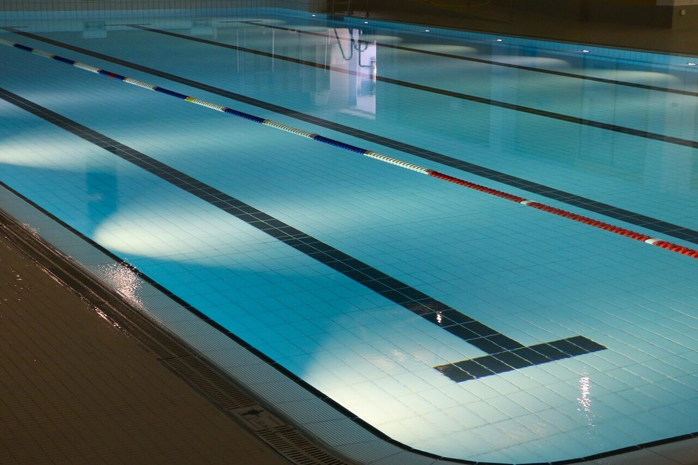
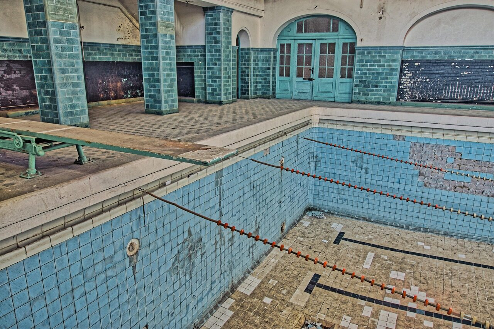

214 open-air pools, lidos and sea pools across Britain, with today's water temperature from the people who swim in them.
Every morning a lifeguard or a regular dips a thermometer at each pool and tells us. Ten of our favourites, from the North Sea to a heated deco pool in the Dales.
Built in 1938, closed in 1989, and left to the buddleia for thirty years. In 2019 a group of swimmers raised £3.1 million, tiled every metre again and opened it to the public, unheated, all year round.


Fifty metres, open sky, every day of the year.
Pick a region to see every pool in it, from the big 1930s lidos to a sea pool you can only reach at low tide.
Sea pools refill themselves twice a day. Forty of them, all free.
Pick a water temperature to see what it feels like, how long most acclimatised swimmers stay in, and what to bring. Everyone is different: start short and build up.
Minute of cold shock. Gasping fades if you stay calm and breathe out slowly. Walk in, don't jump.
Minutes of useful movement in very cold water before your hands and arms start to tire.
Hour before hypothermia in most people even at 5°C. The real danger is the after-drop on land: get warm and dry fast.
Log a swim at the poolside QR code and your passport gets that pool's stamp. Collect all ten in the south-west and the lidos send you a towel. 9,400 swimmers are collecting.
Paper lanterns round the pool edge and a 25 m dip at dusk. Mince pies after.
Book · £6The sea pool at 10 am, free, no booking. Fancy dress encouraged.
DetailsThree waves at 11, 12 and 1. Last year 1,200 swimmers raised £18,000 for the pool.
Book · £10Races from 25 m head-up breaststroke to the 450 m endurance. Water was 3.8° last year.
Enter · £15Tell us about a lido, sea pool or open-air pool, or send today's temperature for one you swim at. We check every entry before it goes live.
Lifeguards and pool staff at most lidos, and named regulars at sea pools. Each reading shows who sent it and when. Readings over 24 hours old are greyed out.
It can be, if you go to a lifeguarded pool, get in slowly, keep it short and warm up properly afterwards. Talk to your doctor first if you have a heart condition.
Most lidos ask you to book a session online, especially at weekends. Sea pools are free and open whenever the tide allows. Each listing links to the booking page.
A pool built into the rocks on the shore, refilled by the sea at every high tide. Britain has about forty, mostly in Cornwall, Devon and the north-east.
Pools pay a small yearly fee for booking links and the passport scheme. We never charge for a listing, and we never rank pools for money.